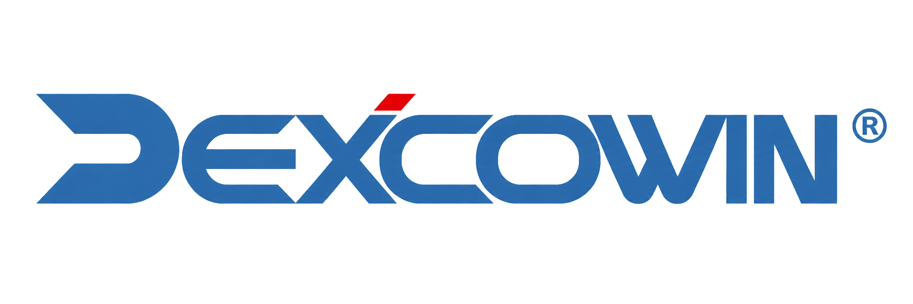

MES"오늘은 DEXCOWIN MES를 처음 소개하는 자리입니다. 15분이면 충분합니다."
"이 네 가지 문제가 엑셀로 재고를 관리할 때 생기는 한계입니다."
"코드 뒤 알파벳 하나로 이 부품이 어느 단계인지 바로 알 수 있습니다."
"창고에서 물건 가져올 때 이제 대장 안 써도 됩니다. 앱에서 요청하면 권동환 사원이 확인하고 승인합니다."
"공정완료품을 입고하면 들어간 부품이 알아서 빠집니다. 낱개 조정은 부서장 확인을 받아야 합니다."
"창고 이동은 권동환 사원, 부서 낱개 조정은 각 부서장, 불량은 바로 등록. 이 세 가지입니다."
"설명만으론 느낌이 안 오죠. 직접 보여드리겠습니다."
불편한 점 또는 추가하고 싶은 기능을 양식에 작성해 주세요.
부서 담당자가 부서원 피드백을 모아서 취합합니다.
취합한 내용을 아래 메일로 첨부해서 보내주시면 반영하겠습니다.
"사용해 보시고 불편하거나 필요한 기능이 있으면 양식에 적어서 부서별로 취합 후 메일로 보내주세요."